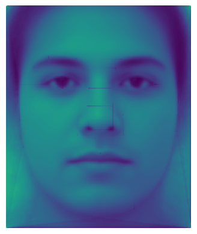

Project 3
Morphing faces by using affine transformations on their meshes
Part 1. Defining Correspondences
The first thing I did was finding a picture of my face and using the picture of Andreas.
Me
Andreas
I used the tool made by a previous student to define the correspondences between the two faces. Now I could compute the mean of the two sets of landmarks and compute the triangulation of the mean by using the Delaunay function from the scipy library.
Me with Landmarks
Andreas with Landmarks
Triangulation
Part 2. Computing the "Mid-way Face"
The next step was to compute the "mid-way face" between the two faces. I did this by looping over all the triangles in the triangulation warping each one to where it would be in the mid-way face. This was done by generating a mask around a triangle, computing the affine transformation matrix, and then applying the inverse of the transformation to the triangle on the mid-way image to get the pixel value of the corresponding pixel in the starting image.
For the affine matrix, we have to solve the equation system
that maps the three coordinates in the start triangle to the
three coordinates in the mid-way triangle. For each point in
the mid-way triangle, we can express the x and y coordinates
as follows:
xi' = a*x + b*y + c
yi' = d*x + e*y + f
For all three points in the triangle, we then get six
equations in total which we can set up in a matrix. Given
that we know the start and mid-way coordinates we can now
solve the system.
When we have computed a, b, c, d, e, and f, we can then put it in the Affine matrix together with a 1 in the last column on the bottom row which makes it homogenous.
To perform the inverse warping with the affine matrix, we first have to compute which pixels are inside the triangle and make the coordinates homogenous. You can then matrix multiply the inverse of the affine matrix with the list of the coordinates inside the triangle to get the coordinate of the corresponding pixel in the starting image. We now have a mapping from the mid-way image to the starting image so we can fill in the pixel values in the mid-way image. To get the correct pixel value of the corresponding pixel however, we have to use bilinear interpolation since the pixel we are looking for might be in between up to four pixels. We therefore have to take the weighted average of the four pixels around the pixel we are looking for to get the correct pixel value.
Finally, we can add all the warped triangles together to get the images fully warped to the mid-way face. To then actually compute the mid-way face, I then computed the mean of the two images which here means taking the average of each pixel value. That gave me this result.

Me warped into the mid-way face
Mid-way face
Andreas warped into the mid-way face
Part 3. The Morph Sequence
When it comes to making the morphing sequence, I implemented a morph function that would compute a morphed image for a given warp and dissolve value. These values represented how many percent the first image would warp into the second one. Here 0 would be the first image, 0.5 would be the mid-way face, and 1 would be the second image.
To then create the morphing sequence, I looped over a range of linearly distributed warp and dissolve values and computed the morphed image for each pair of values. I then saved all the images in a list and could then use the imageio library to save the images as a gif. Before saving the images, I also made sure to add all the frames in reverse order to make the morphing sequence loop seamlessly.

Part 4. The "Mean face" of a population
I chose to compute the mean face over the FEIFace Database. The database only had landmarks for the spatially normalized and not cropped images which were in black and white, but I first made all the images 3D to make sure my algorithm also would work on color images. I used the first 100 images and added one point for each corner to the landmarks on each face to make sure the background also would show in the mean image. I then computed the mean face by warping all the images to the mean triangulation and then taking the average of all the images. This gave me the following mean face.
When I had the average face, I could then warp the faces from the database into the average face. This gave me the following result.
Face 1 warped to the mean face
Face 2 warped to the mean face
Face 3 warped to the mean face
Face 4 warped to the mean face
Face 5 warped to the mean face
Face 6 warped to the mean face
To warp then warp my own face to the mean face, I first had to label my own face in the same way that the faces in the database were labeled. I therefore checked the landmarks of the first image in the dataset and added the same landmarks on my own face with the same tool as before.
The first person in the database
Me with the same Landmarks
I then warped myself into the mean face by using the same method as before and warped the mean face into my face. This gave me the following result.
Me warped to the mean face geometry
The mean face warped to my geometry
As we can see, the image of me warped to the mean face has visible lines in between the warped triangles. This is likeley due to the fact that this image is smaller which makes it more visible when two warped pixels lands on top of one another. This could be resolbed by using a better interpolation method than bilinear interpolation or by using a higher resolution image. You could also create a mask of all the lines and perform a Gaussian blur on them to make them less visible. Another way could be to compute a rolling mean over the image to make outliers like these dissapear.
Part 5. Caricatures: Extrapolating from the mean
For the extrapolation, I first computed the difference
between the points on my face and the mean face. Then I was
able to add or subtract however much of this difference I
wanted to my face to make my face look either closer to or
further away from the mean face. The amount was controlled
by a factor alpha between -2 and 2 with the following
formula:
new_shape = my_face + alpha * (my_face - mean_face)
This made me get the following results.
Extrapolation -2
Extrapolation -1,5
Extrapolation -1
Extrapolation -0,5
Extrapolation 0
Extrapolation 0,5
Extrapolation 1
Extrapolation 1,5
Extrapolation 2
As we can see on the first few images, there are these thick bright lines going across the image. This is due to the fact that the side of my face is getting more pushed into the middle than my eye brows. This makes parts of the face overlap when the image is warped. The result is that the colors are added together which makes the colors much brighter. To solve this issue, you could do edge detection when you are warping the image. Another fix could also be to use better labels whereas the ones that are used now makes some lables like the eye brow and the side of the face really close and therefore makes them likely to overlap. However, we see that the mathematical model is working as intended.
Analyzing the results, we can see that my face is thinner than the average sinse my face is getting wider when we add more of the average image and thinner when we subtract more of the average image. However, my face is also longer away from the camera than the faces in the dataset which makes my face big in general when we add more of the mean face.
Bells and Whistles: Changing ethnicity of my face
For the bells and whistels I chose to change the look of my face into the look of a mongolian man. To do this I found a picture of the mean face of a group of mongolian men found on this blog. I then cropped my image to fit the same size as the mean face of the mongolian mean.
The mean face of a group
Me cropped to the same size
I then morphed my face into the mongolian face by using the warped method from earlier with 1 as the warp value and 0 as the dissolve value to get my face morphed with just the mongolian shape. I then morphed my face with a warp value of 0 and a dissolve value of 0.5 to get the color of the mongolian face but still have my face in there. To get the final result with both the shape and color of the mongolian face, I then morphed the two images together with a warp value of 1 and a dissolve value of 0.5. This gave me the following results.
Mongolian Shape
Mongolian Color
Mongolian Shape and Color